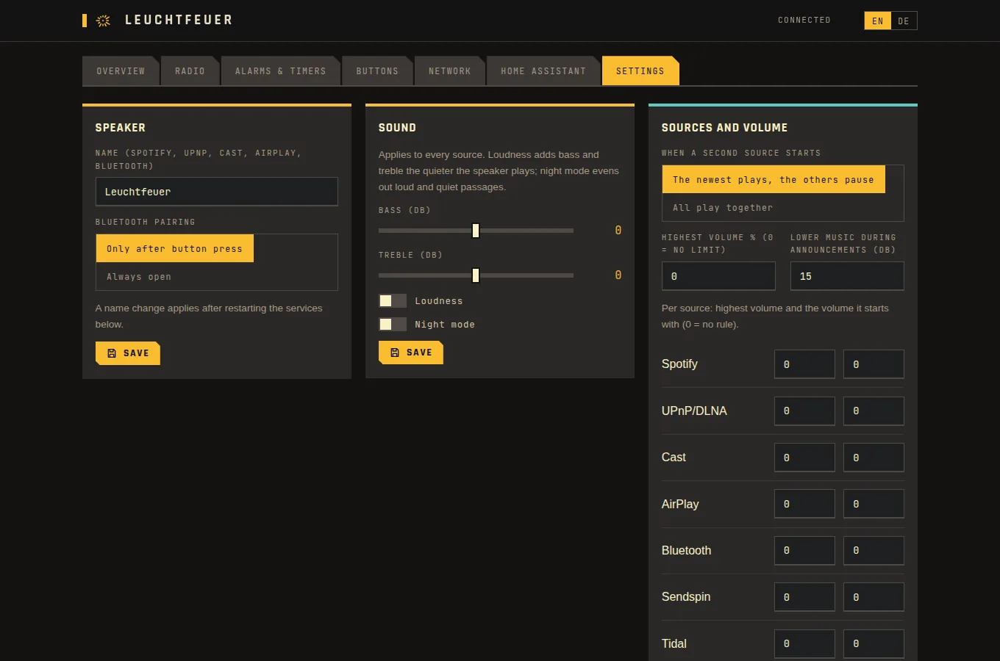

Every app finds it
Jede App findet ihn
Spotify Connect, AirPlay, UPnP/DLNA, Cast (for Music Assistant, Home Assistant, VLC), Sendspin, Snapcast multiroom and Bluetooth with the volume knob in sync. Tidal Connect optional.
Spotify Connect, AirPlay, UPnP/DLNA, Cast (für Music Assistant, Home Assistant, VLC), Sendspin, Snapcast-Multiroom und Bluetooth mit synchronem Drehrad. Tidal Connect auf Wunsch.
Alarms, radio, light
Wecker, Radio, Licht
A morning briefing with weather, appointments and the news, alarms with a sunrise light and a backup tone, station search, room correction measured with your phone, an optional voice satellite for Home Assistant.
Ein Morgen-Briefing mit Wetter, Terminen und Nachrichten, Wecker mit Lichtwecker und Ersatzton, Sendersuche, Raumkorrektur mit dem Handy gemessen, auf Wunsch ein Sprach-Satellit für Home Assistant.
Closed by default
Von Haus aus zu
SSH with key only, the open root shell closed, a firewall for switched-on services only, signed updates that roll back by themselves, API keys, Prometheus metrics, a hardware watchdog.
SSH nur mit Schlüssel, die offene Root-Shell zu, eine Firewall nur für eingeschaltete Dienste, signierte Updates, die sich selbst zurücknehmen, API-Schlüssel, Prometheus-Metriken, ein Hardware-Watchdog.
Part of the house
Teil des Hauses
The speaker registers itself over MQTT: volume, mute, web radio, timers, sleep timer, alarm buttons, now playing, the light ring as a light, button events, and announcements over the music for text-to-speech or the door bell.
Der Lautsprecher meldet sich selbst per MQTT an: Lautstärke, Stumm, Webradio, Timer, Schlummertimer, Wecker-Tasten, Läuft gerade, der Leuchtring als Licht, Tasten-Ereignisse und Durchsagen über die Musik für Sprachausgabe oder die Türklingel.

How it works
So funktioniert es
Prerequisites
Voraussetzungen
- A Harman Kardon Invoke and a USB cable for its service port
- A Linux PC with adb, ssh and curl (Docker and Go only to build yourself)
- Wi-Fi; for Snapcast a snapserver, for Sendspin Music Assistant
- Ein Harman Kardon Invoke und ein USB-Kabel für seinen Service-Port
- Ein Linux-PC mit adb, ssh und curl (Docker und Go nur zum Selberbauen)
- WLAN; für Snapcast ein snapserver, für Sendspin Music Assistant